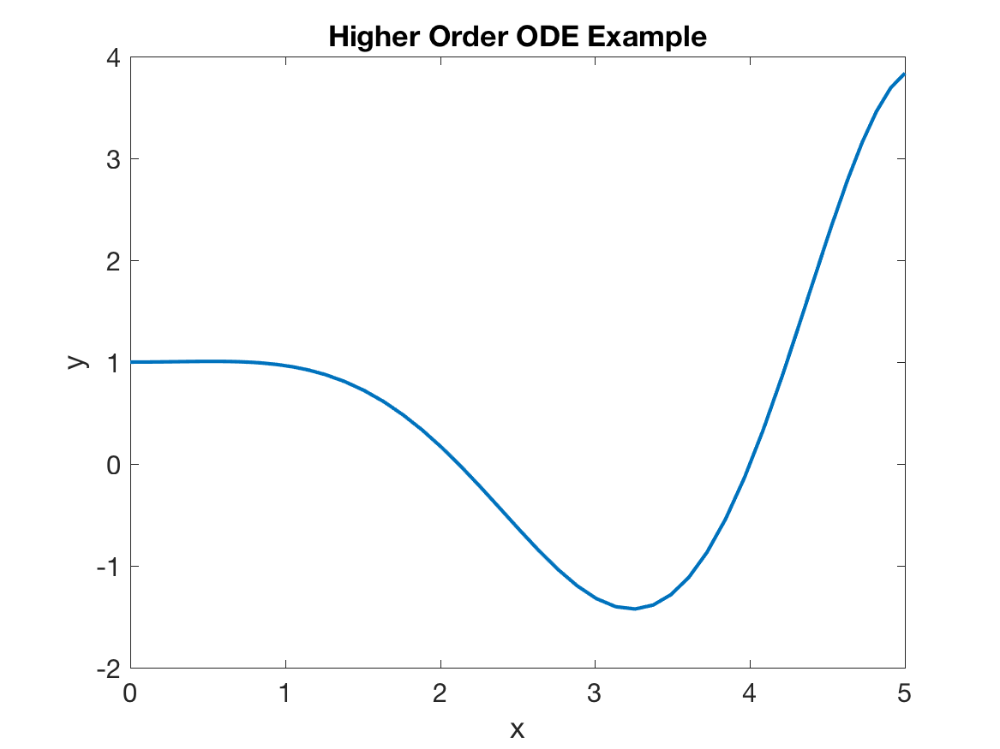

Takeaways
- The trapezoidal method is given by: \[ y_{i+1} = y_i + \frac{h}{2}\left[ f(x_i,y_i) + f(x_{i+1}, y_{i+1}) \right] \] This method is second order accurate and is unconditionally stable.
- The Improved Euler method has second order local accuracy and is given by:
- The Runge Kutta 4 (RK4) method has fourth order local accuracy and is given by:
- We transform higher-order system of ODEs into a numerically solvable form by introducing dummy variables to represent all derivatives besides the higher derivative of each variable.
Trapezoidal Method
The next scheme we’ll discuss it the trapezoidal method. The trapezoidal method is defined as:
\[\begin{gather} y_{i+1} = y_i + \frac{h}{2}\left[ f(x_i,y_i) + f(x_{i+1}, y_{i+1}) \right] \end{gather}\]Notice that this method is implicit since both sides contain \(y_{i+1}\). It is also second order accurate, as we’ll show below.
Trapezoidal method essentially averages the backward and forward Euler formulas to create a more accurate method. Forward Euler tends to “overshoot” the true solution (overshoot in the direction opposite the curvature) and backward Euler tends to “undershoot” (relative to the curvature). As we showed in the previous notes, both of these schemes’ errors depend on the second derivative. So, what if we could kill off this leading error term? This is exactly what trapezoidal method does.
After much algebra, the errors for forward and backward Euler are given by:
\[\begin{align} y(x_{i+1}) - y_{i+1, FE} &= \frac{1}{2} h\lambda^2 + \mathcal{O}(h^2) \\ y(x_{i+1}) - y_{i+1, BE} &= -\frac{1}{2} h\lambda^2 + \mathcal{O}(h^2) \end{align}\](The derivations for these are given in the course reader or easily accessible online.) Both schemes are first order accurate since the leading error term is \(\mathcal{O}(h)\). The important thing to note is that the leading error terms are opposite in sign, so this suggests if we average the two methods together, we can get a better approximation:
\[\begin{align} \frac{1}{2} \left[y(x_{i+1}) - y_{i+1, FE} + y(x_{i+1}) - y_{i+1, BE} \right] &= \frac{1}{2} h\lambda^2 + \mathcal{O}(h^2) -\frac{1}{2} h\lambda^2 + \mathcal{O}(h^2) \\ y(x_{i+1}) - \\frac{1}{2}\left[ y_{i+1, FE} + y_{i+1, BE} \right] &= \mathcal{O}(h^2) \end{align}\]So, a numerical scheme given by an average of forward and backward Euler will be second order accurate. This is essentially how we arrive at the above formula for trapezoidal method. Furthermore, trapezoidal method is unconditionally stable (it is a good exercise to work out the amplification factor for yourself).
As an aside before we move on, the trapezoidal method is extremely popular in practice due to its stability properties. In fact, it forms the basis of the Crank-Nicholson scheme, which is the basis of many algorithms for solving problems in computational fluid dynamics and electrodynamics.
Improved Euler
Trapezoidal method works great for a lot of things in practice, but it’s still an implicit method, and implicit methods can be very difficult and computationally expensive to work with (especially if we’re dealing with nonlinear differential equations). To get around this, we can use the improved Euler method (also known as Huen’s method).
The basic idea of improved Euler is that instead of using an implicit method, we first estimate \(y_{i+1}\) using forward Euler (an explicit method), then use trapezoidal method to calculate \(y_{i+1}\), except using the estimate \(y_{i+1}\) on the right hand side instead of the actual value. The formulas are:
\[\begin{align} \tilde{y}_{i+1} &= y_i + h f(x_i, y_i) \\ y_{i+1} & = y_i + \frac{h}{2} (f(x_i,y_i) + f(x_{i+1}, \tilde{y}_{i+1})) \end{align}\]Such a method is actually known as a predictor-corrector method because we predict the next value \(y_{i+1}\), then correct our prediction. By using an estimate instead of the actual value, this scheme stays explicit but is still second order accurate. Improved Euler is an explicit method it is still conditionally stable.
Runge-Kutta Methods
Finally, we arrive at the culmination of single-step methods: the Runge-Kutta methods. These are a class of numerical methods that extend the idea of improved Euler—namely, using an estimate of the next step—to eliminate error terms and increase accuracy. In improved Euler (which is also known as Runge-Kutta 2, or RK2, since it is second order accurate and a Runge-Kutta scheme), we made just one estimate of the next step, then used this to improve the accuracy. Runge-Kutta methods take this idea to its extreme, and make several successively better estimates of the next step, then combine them to find a very high accuracy estimate.
The most important of the Runge-Kutta methods besides improved Euler is the fourth order accurate variant, known as RK4. The equations for RK4 are given below:
\[\begin{align} k_1 &= f(x_i,y_i) \\ k_2 &= f\left(x_i + \frac{h}{2}, y_i + \frac{h}{2}k_1 \right) \\ k_3 &= f\left(x_i + \frac{h}{2}, y_i + \frac{h}{2}k_2 \right) \\ k_4 &= f\left(x_i + h, y_i + hk_3 \right) \\ y_{i+1} &= y_i + \frac{h}{6} \left( k_1 + 2k_2 + 2k_3 + k_4\right) \end{align}\]Let’s walk through these one-by-one. The update provided by \(k_1\) is essentially the basic forward Euler update, because we are calculating the derivative based on the current point. \(k_2\) estimates the change at the midpoint between \(x_i\) and \(x_{i+1}\) using the forward Euler estimate of \(y\) at this point. \(k_3\) does the same thing, except we use the estimate for the rate of change provided by \(k_2\). \(k_4\) is an improved Euler update, except we’re doing the update using the estimate provided by \(k_3\). Finally, when you crunch them all together, you come out with the last equation as the combination of these that minimizes the error.
The general idea here is that we’re obtaining successively better estimates of the rate of change, then crunching these together to find a very high accuracy estimate. The exact analysis for why this scheme is fourth order is very involved, so we won’t go into it here. As far as single step scheme go though, RK4 is the “gold standard” since we achieve very high accuracy with minimal information (only the values at a single step.)
This accuracy comes at a cost though: notice that we needed to evaluate the derivative four times. Most of our computational power is expended evaluating derivatives, and for that reason RK4 is not used very often in practice. However, the ideas behind it are exceedingly important, and it still is very useful for solving smaller-scale problems such as those you might encounter in systems biology or neuroscience.
Higher Order ODE
To change direction a bit, we’ll now discuss how to solve higher order ODEs using the numerical schemes we’ve discussed in this class. So far, we’ve only talked about how to solve a first order ODE, specifically:
\[y' = f(x,y)\]However, the world is not first order (just look at Newton’s second law), so numerical methods would be pretty useless if they could only tackle first order differential equations. We use numerical solutions for everything these days, so how do we make these numerical schemes work for higher order questions?
The answer is: we don’t. Instead, we transform higher-order equations to be all first order, then solve using a numerical method like we’ve discussed already. This might sound a bit confusing at first, but I think you’ll see that it’s actually pretty intuitive.
The basic idea is that if we are given a higher order differential equation, we can introduce dummy variables such that the system becomes first order. That is, if we have some sort of high order ODE:
\[f(y^{(n)}, y^{(n-1)}, \cdots, y, x) = 0\]we can introduce dummy variables so that we have a coupled first order system (not necessarily linear system) of ODEs:
\[\vec{v}' = f(\vec{v}, x)\]The difficulty is in figuring out what this vector \(\vec{v}\) is, and rearranging the original equation to be in the form of a couple first order system. The best way to understand how to do this is by through an example, so let’s work through one together. Consider the equation:
\[y''' + 2y' +xy = \sin(x)\]This equation is a third order linear inhomogeneous equation. None of the methods we’ve learned so far in this class (or are going to learn, for that matter) are able to solve this kind of equation analytically, so we turn to numerical methods.
The first thing we need to do is rearrange the equation so that the highest order derivative is on the left hand side of the equation, and all other terms on the right hand side:
\[y''' = - 2y' - xy + \sin(x)\]In this example, this step is trivial. However, if we had, say, two couple second order ODEs, this step might take quite a bit of algebra. From here, we need to introduce dummy variables. By dummy variables, I mean we are going to introduce new variables that are equal to \(y\) and its derivatives, the substitute them into the equation to make the equation first order.
The number of dummy variables we introduce for a given function is equal to order of the highest order derivative of each function appearing in the ODE or system.
This means if a system is third order in \(y_1\), then we need three dummy variables (for \(y_1\), \(y_1'\), and \(y_1''\)). If it was also second order in \(y_2\), then we need two dummy variables for \(y_2\) and \(y_2'\).
For the example at hand, the equation only has one function \(y\) we are solving for, so our lives are incrementally easier. The ODE is third order in \(y\), so we need three dummy variables. For the sake of simplicity, we will call them \(v_1\), \(v_2\), and \(v_3\):
\[\begin{align} v_1 &= y \\ v_2 &= y' \\ v_3 &= y'' \end{align}\]When assigning the variables, we start with \(y\), then go up to one derivative less than the highest one appearing in the equation. This will become clear in a second. So, what are the derivatives of our dummy variables? The dummy variables are just derivatives of \(y\), so these are easy to compute:
\[\begin{align} v_1' &= y' = v_2 \\ v_2' &= y'' = v_3 \\ v_3' &= y''' \end{align}\]From our equation way above, when we rearranged so \(y'''\) was on the left hand side, we know that \(y''' = -2y' - xy - \sin(x)\). Making the appropriate substitutions with dummy variables, we have from this:
\[v_3' = -2 v_2 - x v_1 - \sin(x)\]Combining this with the above expressions, we have:
\[\begin{align} v_1' &= v_2 \\ v_2' &= v_3 \\ v_3' &= -2v_2 - xv_1 - \sin(x) \end{align}\]This is just a first order system of ODEs! We know we can solve this using standard numerical schemes and black box routines like ode45(). By introducing dummy variables, we’ve morphed our ODE into a first order system.
Note: we algebraically rearranged the equation since it makes it much easier to introduce dummy variables and write out the final system. This step doesn’t necessarily need to come before we introduce dummy variables, but it definitely helps.
Once you actually transform the ODE though, you’re going to need to solve it numerically, For the sake of completeness, we’ll also do this here. Suppose I assign initial conditions as \(y(0) = v_1(0) = 1\), \(y'(0) = v_2(0) = 0\), and \(y''(0) = v_3(0) = 0.1\). The following script will then solve the equation numerically with ode45():
clear all; close all
yp = @(x,y) [y(2); y(3); -2*y(2) - x*y(1) - sin(x)];
[x, Y] = ode45(@(x,y) yp(x,y), [0 5], [1, 0, 0.1]);
plot(x, Y(:,1))which produces a plot of the numerical solution:

We should discuss one the implementation. First, note that I used an anonymous function to compute the \(y'\) vector that is fed into ode45(). In the first numerical methods notes, we used an anonymous function to compute a scalar, but in reality you can also use them to compute a vector. As we’ve done here, just hard code the vector, where each element is an expression in terms of the inputs.
Secondly, note that the anonymous function produces a column vector and not a row vector. This is very important in ode45(), and it can cause issues if your derivative function (regardless of how it’s implemented) is outputting a row vector.
Finally, note how I’ve plotted the solution. When you are solving a system of ODEs with ode45(), the function will output the domain x as a column vector, and the solution Y as a matrix, where each column is the solution for one of the variables in the system. (ode45() is essentially calculating a solution for every dummy variable along with \(y\).) When we set up the system, we had \(y = v_1\), so we want to take the first column of the matrix that ode45() outputs. To take all the rows in a column, use slice notation in MATLAB. Basically, put a colon in the index that you want to extra all of, and a specific value and range for the other index. Here, we put a colon for the row number, and 1 for the column. This gives us a vector containing all the rows in column 1.
Last Comments on Systems and Higher Order ODEs
Is this method easy? Not really. Painful? Occasionally. But once you hack past all the algebra (and a few implementation details), I think you’ll find the thought flow for converting higher-order ODEs into a system of first order ODEs to be very clear.
To summarize, the algorithm for rewriting a higher order ODE (or higher order system) as a system of first order ODEs is:
- Algebraically solve for the highest order derivatives in the system
- Introduce “dummy variables” as necessary. For the highest order derivative of each function, you need to introduce one dummy variable for every derivative up to the highest order.
- Rewrite the higher order system as a first order system using the dummy variables. Do not forget to include the relationships between the dummy variables when writing out your system, since these are what form a complete system
Transforming higher order systems of ODEs into a first order system can be a bit tricky since there are a lot of details to keep track of and a lot of algebra to hack through. However, as long as you are dilligent about your bookkeeping with all the variables and follow the algorithm above, you will be a master of this in no time.